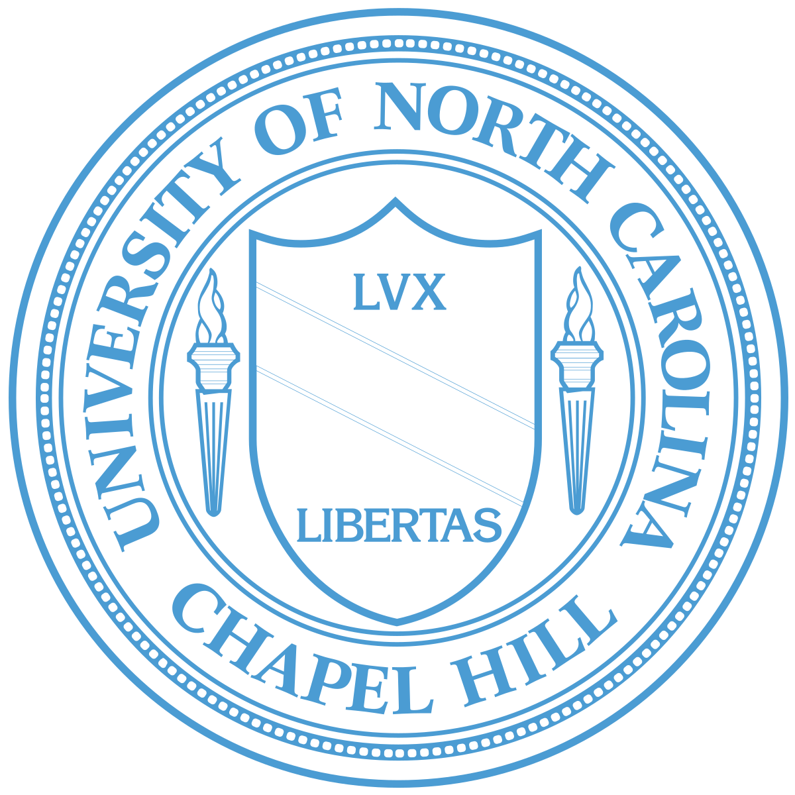

Ph.D. Student |
Hello! I am an incoming Ph.D. student at the
JEDI Lab,
College of Design and Engineering at
NUS, supervised by
Prof. Janghee Cho.
My research interests include AI + (human-computer interaction, data visualization, information design, and visual communication design).
I am particularly excited about designing and implementing AI-driven systems that facilitate online interaction and collaboration, focusing on understanding the role AI systems play in such interactions.
Previously, I conducted research on empirically grounded visualization system design at
UNC/CU VisuaLab under the supervision of
Prof. Danielle Albers Szafir,
and pursued HCI research with
Prof. Prasun Dewan during my undergrad.
Ph.D. National University of Singapore (Aug. 2025 - )
|
|
|  |
B.A. University of North Carolina at Chapel Hill (Aug. 2021 - May. 2025)
|
Characterizing Visualization Perception with Psychological Phenomena: Uncovering the Role of Subitizing in Data Visualization
Arran Zeyu Wang, Ghulam Jilani Quadri, Mengyuan Zhu, Chin Tseng, and Danielle Szafir
IEEE Trans. Visualization & Comp. Graphics (Proc. VIS 2025), 2026.
Honorable Mention award üèÖ
Towards Human-AI Collaboration for Misapplication Detection in Programming Exercises
Samuel George, Zeqi Zhou, Ziqian Zhao, Mengyuan Zhu, and Prasun Dewan
IEEE Symposium on Visual Languages and Human-Centric Computing (VL/HCC), 2025.